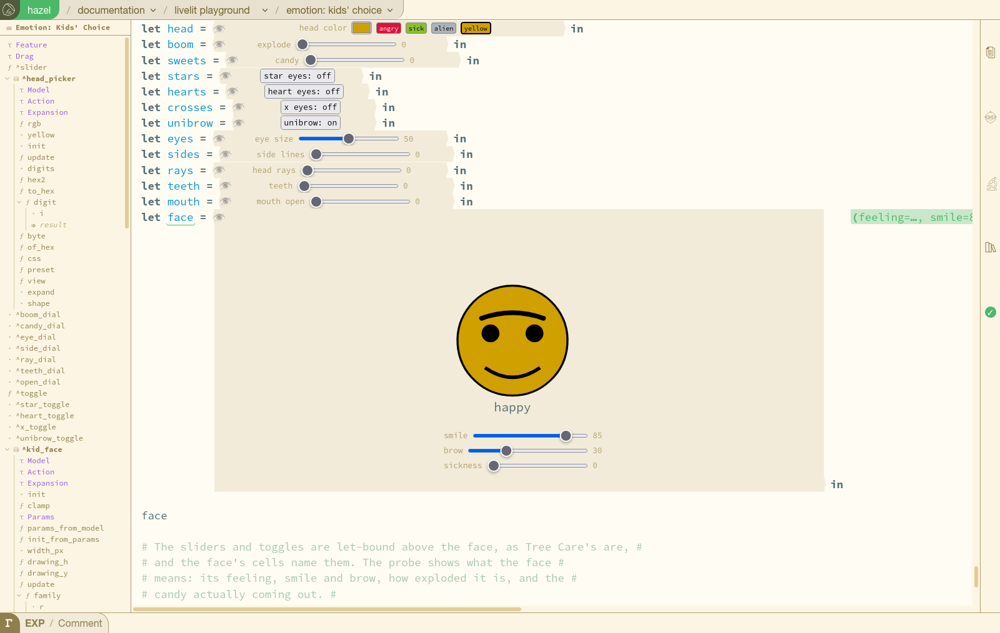

Hazel performance analysis · Issue 001 · 2026-10-10
Why a slider isn't instant yet
Hazel livelits, on the playground slides, measured 2026-10-09 and 10. Branch #2635 (livelits × modular editors), dev builds, headless Firefox.
A slider change is the simplest thing a livelit can be asked to do: one number in one model changes, and something that depends on it redraws. In the Dress Up app it costs under a millisecond. In Hazel it now costs about half a second, down from 4.6 s yesterday afternoon and from tens of seconds a few weeks ago. This report collects every performance problem we've found and fixed this fall, then looks at where the remaining half second goes and what it would take to get to "immediate".
- Kids' Choice, Polygons, Shirt and Pants, Shoes and Hair on the live build of #2635 (livelits × modular editors), deployed from
4239ecf04f, which has every fix below. - The same slides on #2597's live build (the full livelits branch), deployed from
0ef8a6a3c5. - Dress Up, the plain HTML/JS app this report compares against.
The live builds take several seconds to load a slide. The numbers here were measured on local dev builds of the same commits, in headless Firefox.


The same slider, at real speed
Both lanes start when the slider is released and finish when the picture shows the new value. They run in real time. The Dress Up lane finishes before you can see it move.
The Hazel lane's colours are its stages, in proportion to the CPU profile of the same release (see the next section); the total is the median wall time without the profiler. The 10-09 run is one colour: its stages were not split out the same way.
Where the half second goes now
A slider release in Hazel is a program edit. The new model is written back into the program text, and everything that depends on the text runs again. In Dress Up, a release changes one field of one object and redraws.
Two things stand out:
- The worker evaluates the whole program for every release: about 410 ms profiled, close to half the release, while the main thread waits. Every slider, toggle and helper is re-evaluated to redraw one face.
- Everything else is many medium costs, each touching the whole program somewhere: re-building terms, encoding a 478 KB request, decoding a 383 KB response, redrawing the editor.
Statics, which a "skip statics" toggle would remove, is now 16 ms of it.
How we got here
The TypHash fix (#2661) doesn't show on this slide; it was the Polygons click's big fix (15–17 s → 2.0–2.2 s profiled).
Every problem found this fall, and its fix
Tags: super-linear grows faster than the program; repeated work the same answer computed again; unshared copy a copy where a reference would do; identity lost a cache missing because objects were re-made; data size; scheduling.
| Problem | Kind | Fix | Status | Measured |
|---|---|---|---|---|
| Every let-bound function took the recursive path; passes multiplied with nesting, 4depth | super-linear | #2603 | open | nested lets 400 s → 0.6 s; statics 20–30% faster |
| Jump to a projector walked the caret token by token | super-linear | #2602 | merged | ~190 ms per projector click → direct |
| Loading text the fast parser rejects: quadratic fallback parser (finding 1) | super-linear | #2610, #2614 | open | corpus 1,242 s → 433 s (both); Kids' Choice 227 → 93 s |
| Each run shipped the whole incremental cache to and from the worker | data size | #2606 | open | responses 86–98% smaller |
| Elaborations carried the source's whitespace and comments | data size | #2608 | open | requests 12–49% smaller |
| A module's definition analyzed twice | repeated work | #2651 | open | 1.8 s of a slide's 4.2 s statics |
| A livelit definition analyzed twice (synthesis, then analysis) | repeated work | #2635 76ecb91394 | livelits | Shirt and Pants statics 4.3 → 2.8 s |
| Firefox: worker couldn't start while the page was busy; late timers killed it | scheduling | #2652 | open | "Evaluation timed out" slides now draw |
| Statics re-ran 3× per edit (probe pins compared to the wrong keys) | repeated work | #2635 d42ae8193d | livelits | head-colour slider 20.6 s → ~2 s (10-01) |
| The builtin Html type written out in every ascription; Macro uses closed over all builtins | data size | #2597 4eeebeaff3, 6b42a0e09a | livelits | a slide's request 609 → 224 KB |
| Every livelit use evaluated the whole livelit definition, then copied it unshared | unshared copy | #2635 54543edc6b | livelits | Shoes and Hair analyze 4.3 → 2.0 s |
| Statics analyzes some expressions 3× per multiplier: recursive lets, shadowing a builtin, a label on an unannotated parameter (finding 10) | super-linear | counted: --count-passes, CI group StaticsPasses | not fixed | B2T2 programs up to 12× per expression; 3d for nested recursion |
| The evaluator compared two copies of the Html sum type, a full meet, at every node of a view | repeated work | #2661 (Merkle-hashed types) | open | Polygons click 15–17 → 2.0–2.2 s (profiled) |
| Livelit definitions and views were "finished": every helper copied into every closure, per event and per redraw | unshared copy | #2635 d706d4d1ec | livelits | Kids' Choice 4.6 → 1.6 s; Polygons → 0.17–0.19 s |
| A projector update re-made every piece of the program, so per-item parsing re-parsed all of it | identity lost | #2671; #2635 cefa5c2c5c | open | Kids' Choice 1.6 → 0.8 s |
| Every redraw evaluated every livelit's view, changed or not | repeated work | #2635 4239ecf04f | livelits | Kids' Choice 0.8 → 0.53 s |
Still open from #2609, without a fix: paste in the middle of a program falls back to the quadratic parser; long modules make MakeTerm worse than linear; the CLI hangs after an error report; a long paste can hang the page; and Shirt and Pants could lose a click. That one is now explained: each time the app re-measures its font (at load, when web fonts settle, on zoom), SetFontMetrics asks the editor to scroll the caret into view, and on a fresh slide the caret is at the top. A late re-measure jumps the editor about 10,000 px while you are scrolled down to the shirt, so the click lands on text. The fix, not yet applied, is for a font re-measure to keep the scroll position.
What the list has in common
Work on the whole thing, inside a loop over its parts
Per character, re-process the whole run. Per let, re-analyze the whole definition. Per click, walk the whole program. Per use, evaluate the whole definition. Per variable, copy in its whole value. Per redraw, evaluate every view. Each is linear on its own; inside a loop it becomes quadratic, and nested it becomes exponential.
Caches that key on object identity break silently
Per-item parsing, the layout cache and the statics cache reuse work when they see the same objects as last time. One helper that re-made every object (MapPiece) turned all of them off at once, with no error, just slowness. A hash of the content (TypHash) survives copies. Identity is cheaper when it holds; a hash is safer when something upstream might copy.
Measure where the user is
Node said statics took 4 s on slides that froze Firefox for 30–108 s. The fixes that mattered most were found by profiling Firefox itself, one interaction at a time (scripts/profile_interaction.py), and by counting work instead of timing it (--count-passes).
What limits a slider now, and what it would take
Ranked by how much of a release each would remove. Profiled times; real time is about 1.7× smaller.
- Evaluate only what the change affects (~410 ms, the worker). One slider's value feeds one face. Re-evaluating the whole program for it is the largest single cost. The worker already keeps an incremental cache (#2606); a release should reuse everything that doesn't depend on the changed binding. That needs to know what depends on what, which statics already computes per item.
- Redraw only what changed (~310 ms, layout and DOM). A release redraws the whole editor. Only the changed livelit, and the livelits reading it, have anything new to show.
- Keep a livelit's change out of the text path (~190 ms: re-build terms, statics, request). A livelit's
updatereturns a value of its declared Model type, so its result is well-typed by construction. A model change could patch the elaborated program at the model's id and skip printing, re-parsing and re-checking. This is the "skip statics" toggle, grown into a fast path, and it is now worth more than statics alone. - Send the worker a diff, not the program (62 + 55 ms; 478 KB out, 383 KB back). Cyrus's suggestion. Once (1) and (3) exist, a release's real change is one model value, a few hundred bytes.
- A faster evaluator for the views that do change (~170 ms). The face's view must run. The wasm spike (#2490) measured the evaluator about 4× faster under
wasm_of_ocamlon fixed-precision work.
With (1)–(3), a release would be the livelit's own update (16 ms), a model patch, re-evaluating the face, and redrawing the face: tens of milliseconds, the same shape as Dress Up's path. Dragging is already there: while the finger moves, a livelit runs its own update and view on the page without any of this, which is why the slider itself follows the pointer.
How these were measured
- Headless Firefox over WebDriver, a fresh profile per run, dev builds of #2635, on Matthew's laptop. Wall times are from the slider's
changeevent until the face's eyes redraw at the new size (scripts/slider_timing.py), four runs per build. - Stage times come from the Gecko profiler, started from Firefox's privileged context after load and bracketed with
performance.mark(scripts/profile_interaction.py). Profiled runs take about 1.7× longer than unprofiled ones. - Message sizes:
Worker.prototype.postMessagewrapped after load, with a listener for the worker's responses (scripts/worker_sizes.py). - Dress Up: sixty
inputevents on its eye-size slider in the same headless Firefox; Firefox timers have 1 ms resolution, and the median was 0 ms, the worst 2 ms. - Scripts are in
~/hazel-livelits-modular/scripts, untracked. Details and discussion: hazelgrove/hazel#2609, findings 10 and 11.